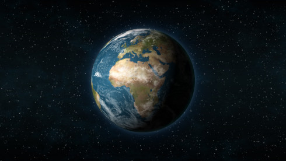
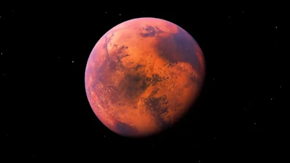
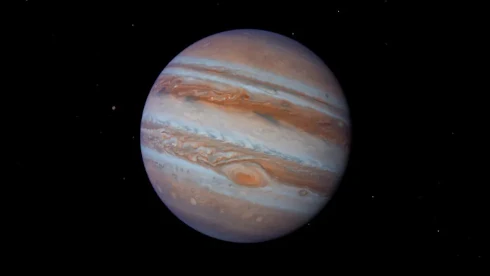
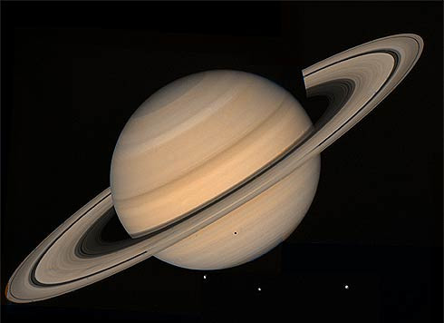

Como o sistema solar foi formado
Em meio a várias perguntas sobre as origens do Sistema Solar e do que há nele, está a sua formação. Graças à datação radiométrica, método que determina a taxa de decaimento radioativo de elementos, os astrônomos conseguiram determinar que a Terra e o restante do nosso sistema têm, aproximadamente, 4,6 bilhões de anos. Esse número não vem das rochas do nosso planeta, mas sim de meteoritos, fragmentos de objetos antigos do período inicial do Sistema Solar.
Embora muitas ideias na astronomia tenham passado por mudanças radicais ao longo dos tempos, a explicação de como a nossa vizinhança se formou teve relativamente poucas alterações nos últimos dois séculos — e ela surgiu com um cientista sueco, no século 18. Em 1734, o cientista e filósofo Emanuel Swedenborg, propôs que o Sistema Solar veio de uma grande nuvem de gás e poeira. Essa ideia foi reaproveitada pelo filósofo alemão Immanuel Kant, que apresentou uma teoria em que uma grande nebulosa de matéria, chamada “nebulosa solar”, fazia parte de uma nuvem ainda maior de gás e poeira.
Essa nuvem teria colapsado sobre sua própria estrutura e iniciou um movimento de rotação. Depois, foi a vez do matemático e astrônomo francês Pierre-Simon Laplace trazer suas ideias, que sugeriam que o Sol tinha uma atmosfera grande e quente que se estendia pelo Sistema Solar.
Essa "nuvem protoestelar" se resfriou e contraiu, iniciando um movimento rotativo que expeliu material que originou os planetas que conhecemos. Hoje, o entendimento desse processo já se expandiu, mas o principal dele se mantém.

ordem dos planetas
-
Mercúrio

"Mercúrio é o planeta mais próximo do Sol. Esse planeta é capaz de refletir cerca de 12% da luz solar, sendo um dos astros mais brilhantes vistos da Terra. Encontra-se a cerca de 57.910.000 km do Sol. Sua superfície é repleta de crateras, enquanto seu núcleo é rico em ferro, e a espécie de atmosfera existente no planeta é composta, em sua maioria, por hélio (98%) e hidrogênio (2%). A temperatura do planeta durante o dia atinge 430ºC."
-
Vênus

"Vênus é o segundo planeta em relação ao Sol, conhecido também como Estrela D'alva, por ser, muitas vezes, um dos astros mais brilhantes no céu no período da noite. Encontra-se a aproximadamente 108.200.000 km do Sol. Possui características semelhantes às da Terra como tamanho e massa, mas difere-se nas condições que propiciam a vida. Possui uma atmosfera 92 vezes mais densa que a atmosfera terrestre, estando o planeta quase sempre envolto por nuvens. Essa atmosfera é composta especialmente por CO2, o que contribui para que a temperatura do planeta chegue a 460ºC."
-
Terra

"A Terra é o planeta que mais se difere dos demais, visto suas condições e características que permitem a existência de vida. O planeta encontra-se a uma distância favorável do Sol, cerca de 149.600.000 km. Seu dinamismo proporcionado pela radiação solar, forças da maré e o calor proveniente do seu núcleo o tornam um planeta único no Sistema Solar. Sua temperatura média é de 14ºC, e apenas 60% da energia solar é absorvida. A atmosfera terrestre é atualmente composta por gases como nitrôgenio, oxigênio, gás carbônico e vapor d'água. Sua estrutura interna é composta por núcleo, manto e crosta terrestre. Possui um satélite natural, a Lua, com rotação sincronizada à da Terra."
-
Marte

"Marte é o quarto planeta segundo à distância do Sol. Encontra-se a aproximadamente 227.940.000 km dessa estrela. Esse planeta possui o clima mais parecido com o da Terra, assim como o seu movimento de rotação. A observação da sua superfície levou alguns cientistas a considerarem possível existência de formas de vida no planeta. Sua superfície é caracterizada pela presença de crateras e poeira, composta por magnetite, que confere ao solo marciano uma cor avermelhada. O solo do planeta é rico em ferro e silício. A atmosfera do planeta é menos espessa que a da Terra, sendo constituída especialmente por CO2, nitrogênio, vestígios de oxigênio, monóxido de carbono e vapor d'água. As temperaturas no planeta podem variar entre -76ºC e -10ºC."
-
Jupter

"Júpiter é conhecido como o “gigante gasoso”, sendo o maior planeta do Sistema Solar, além do planeta com maior velocidade de rotação. Encontra-se a aproximadamente 778.330.000 km do Sol. Sua aparência apresenta tons de vermelho, laranja, marrom e amarelo. Apesar de ser o planeta de maior massa, ele não é o mais denso, visto que é composto por gases, especialmente hélio e hidrogênio. Acredita-se que o planeta possua um núcleo rochoso e não se sabe ao certo se possui uma superfície definida. No ano de 1979, descobriram que Júpiter apresenta um sistema de anéis."
-
Saturno

"Saturno é o segundo maior planeta do Sistema Solar, estando a aproximadamente 1.429.400.000 km do Sol. O planeta gasoso é conhecido por seus anéis e acredita-se que esses são compostos por gelo, devido ao seu intenso brilho, podendo refletir até 80% da luz solar. O planeta possui um único grande satélite conhecido como Titã. A atmosfera do planeta é constituída, principalmente, por hidrogênio e hélio. A densidade do planeta é bastante inferior à da Terra, por causa da sua composição. Há indícios de que o planeta possua um núcleo sólido, assim como Júpiter."
-
Urano

"Urano é um planeta de pouca luminosidade e encontra-se a cerca de 2.880.990.000 km do Sol. Apresenta massa menor que Júpiter, porém apresenta um núcleo mais denso, o que possibilita dizer que talvez possua um núcleo rochoso. Urano foi descoberto em 1781. O planeta possui anéis, os quais foram descobertos em 1977 e são bastante opacos à luz. Além disso, apresenta cerca de 27 satélites naturais e cerca de 27 luas. Sua atmosfera é composta por hidrogênio, hélio e metano, sendo esse último o responsável pela sua cor azulada. A temperatura no planeta é de aproximadamente -218ºC."
-
Netuno

"Netuno é o planeta mais recentemente descoberto. Sua presença foi notada no ano de 1845. Encontra-se a aproximadamente 4.504.300.000 km do Sol. O planeta possui características semelhantes às de Urano em termos de massa e composição atmosférica. Sua atmosfera é composta por hidrogênio, hélio e metano, e possui temperatura média de -218ºC. Acredita-se que seu interior seja semelhante também ao de Urano. Netuno possui um sistema de anéis. Além disso, apresenta treze satélites, sendo o seu maior conhecido como Tritão."
girando em torno da nossa galaxia
O Sol, as outras estrelas, as nebulosas gasosas, e tudo o que faz parte da galáxia, gira em torno do centro galáctico movido pela atração gravitacional da grande quantidade de estrelas (massa) ali concentradas, da mesma forma que os planetas giram em torno do Sol
Então é isso! Espero que você tenha gostado do nosso artigo com essa curiosidade sobre o sistema solar. Só não esqueça de nos acompanhar na rede social. instagram